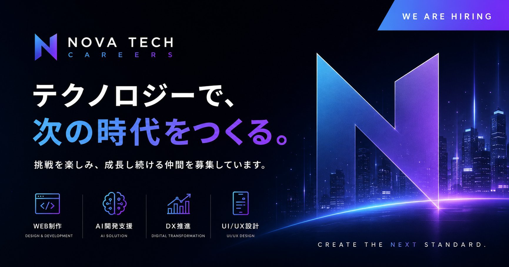

C A R E E R S
テクノロジーで、
次の時代をつくる。
本書は、 採用 LP 「NOVA TECH CAREERS」 の設計意図と実装プロセスをまとめた制作企画書です。 「ただ綺麗なサイトを作る」 のではなく、 採用課題を解決する LP として何ができるかを起点に、 設計 → デザイン → 実装 → 公開までを通して取り組んだ過程を記録しています。

INDEX
— Contents · 全 11 セクション —
Project Overview
プロジェクト概要
Site Structure & UI/UX
サイト設計 ／ UI ・ UX
First View & CTA Strategy
ファーストビュー ／ CTA 設計
Design Concept
デザインコンセプト
Tech Stack & Environment
技術構成 ／ 開発環境
Implementation Highlights
実装ポイント
Web Marketing Perspective
Web マーケティング視点
WordPress Migration Plan
WordPress 化想定
Challenges
苦労した点
Learnings
学んだこと
Public Resources & Closing
公開リソース ／ Closing
01 — Project Overview
— What this site is built to achieve —
近未来系 IT 企業を想定した 架空企業の採用 LP を、 ゼロから企画 ・ 設計 ・ 実装 ・ 公開まで担当しました。 ポートフォリオ作品としてだけでなく、 「採用 LP として実務を意識した構成」 をゴールに据えて制作しています。
PURPOSE
「ただ綺麗な採用サイト」 ではなく、 応募数 ・ 応募者の質 ・ エントリー完了率 を改善する LP として設計。 ファーストビューでの訴求 → 不安解消 → エントリーまでの動線を 1 枚で完結させる構造を組み立てました。
TARGET
20 代後半 〜 30 代前半の エンジニア ／ デザイナー。 「裁量のある環境 ・ リモート ・ 成長機会」 を重視し、 移動中にスマートフォンで採用情報を比較する層を中心に想定しています。
ISSUE
① ファーストビュー 3 秒以内の離脱
② 「合うか／働けるか」 の不安が解消されないまま閉じられる
③ スマホ操作性が悪く、 移動中のエントリーが完結しない
④ そもそも検索 ・ ローカル流入に乗らない
APPROACH
「世界観 → 価値 → 条件 → 行動」 の 4 段で構成。 ヒーローで価値訴求、 Culture ／ Interview で不安を解消、 Recruit ／ FAQ で具体条件を提示、 Contact で行動に繋げる 縦動線設計 を採用しました。
制作スタンス ： 本案件は架空企業ですが、 実案件を想定した姿勢 で設計することを意識しました。 ヒアリングシート ・ ペルソナ ・ KPI 目標 ・ サイトマップを順に作成し、 デザインに入る前に 「何を解決するためのサイトか」 を言語化してからコードに進む手順を取っています。
02 — Site Structure & UI/UX
— Information architecture & user flow —
採用 LP のユーザーは 「移動中スマホで複数社を比較する」 のが典型行動。 下層ページを増やすほど離脱ポイントが増えるため、 トップ 1 枚で全要素に触れる 構造を採用しました。
「何の会社か」 を 3 秒で伝える。 数値指標 4 つで判断材料を即提示。
Mission ・ Vision ・ Value と 4 サービス領域で 「自社の格」 を提示。
「自分が働けるか」 の不安を、 文化 ・ 制度 ・ ツールスタックで解消。
架空メンバーの声を 3 枚配置。 「自分と近い人がいる」 を作る装置。
4 ポジションを <details> で折り畳み。 必要時のみ展開できる UI。
採用担当者向けに 「成果視点で組んだ理由」 を明示。 ポートフォリオ用補強。
未経験応募 ・ 選考フロー ・ リモートなど、 直前の懸念を先回りで解消。
応募 ／ カジュアル面談 ／ お問い合わせ の 3 種の温度感 を用意。
① 迷わせない／迷っても戻れる — ヘッダーに 「トップへ戻る」 「予約へ進む」 を常駐。 ② フォームの心理的負荷を最小化 — テキスト入力を減らし、 タップで選べる UI に。 ③ アクセシビリティを 「品位」 として扱う — セマンティック HTML ・ ARIA ・ フォーカスリングを丁寧に。
03 — First View & CTA Strategy
— Designing for the first 3 seconds —
採用 LP の離脱の大半は ファーストビュー 3 秒以内 で発生します。 「何の会社か」 「自分に関係があるか」 「次に何をすればいいか」 を、 視線が止まる前に提示する設計にしました。
LAYER 01
「テクノロジーで、 次の時代をつくる。」 の主見出しと、 Web 制作 ／ AI ／ DX を即提示。
LAYER 02
NOW HIRING · 2026 SPRING のパルスバッジで、 「今、 募集している」 を視覚化。
LAYER 03
平均年齢 ・ リモート率 ・ プロジェクト数 ・ 技術スタック数を 4 KPI として並置。
ヒーロー直下 ／ ヘッダー右上 ／ 各セクション末尾。 最も目立つ位置に集中配置。
「私たちについて」 「カジュアル面談」 など、 第二の選択肢として配置。
フッター ／ ナビ。 「気づいた時だけ使う」 静かな位置に。
設計判断 ：金ボタンの数を絞ることで 「ここを押せば応募できる」 を即理解できる状態を作る。 CTA を均一に増やすほど、 むしろ意思決定は鈍ります。 「数」 ではなく 「階層」 を設計する ことを意識しました。
04 — Design Concept
— Visual language system —
COLOR
背景は #0a0b14 の漆黒。 アクセントは
#5b8def → #8b5cf6 → #c084fc の 3 色グラデーション。
黒の比重は 70 % 以上、 アクセントは 「ここを見せたい」 場所のみに限定。
「使う場所が限られているからこそ効く」 配色設計です。
TYPOGRAPHY
欧文見出しに Manrope、 本文に Noto Sans JP、 UI ・ コードに JetBrains Mono。 セリフ寄りの可読性と、 SaaS 系プロダクトに通じる端正さの両立を狙いました。
GLASS UI
backdrop-filter: blur() を 限定的に 使用。
ヘッダー ・ ガラスカード ・ ドロワー背景にのみ適用し、
「全面ガラス」 にしないことで近未来感と視認性を両立。
MOTION
ヒーローのオーブを 18 秒周期で漂わせ、 セクションは IntersectionObserver で フェード + 24px Y 軸移動 のみ。 「動きすぎず、 しかし無反応でもない」 上品な手応えを目指しました。
なぜ黒ベースか？ ：黒は単に高級感を出す色ではなく、 グラデーション ・ ガラス効果 ・ 数値などを 最大コントラストで際立たせる土台 として機能します。 SaaS プロダクトの管理画面に通じる 「情報密度を保ったまま読ませる」 設計に欠かせない選択でした。
05 — Tech Stack & Environment
— Selected with intent —
フレームワークを使わず、 HTML / CSS / JavaScript のバニラ構成を選定しました。 「将来 WordPress 化する前提」 と 「未経験でも保守できる範囲」 のバランスを取った技術選定です。
ENV / 01
XAMPP で Apache を立ち上げ、 ローカルサーバー経由で表示確認。
file:// ではなく http:// 経由で検証することで、
将来 WordPress を載せるときの挙動と差分が出ないようにしました。
ENV / 02
ブランチを main 一本に絞り、 Pages を / ルート公開で運用。
relative path で完結 するように ./css/style.css 形式に統一し、
移行時のパス書き換えコストを最小化しています。
ENV / 03
4 ブレイクポイント (1340 / 1024 / 768 / 480) で組み、 DevTools のデバイスモードで主要な端末幅を確認。 横スクロールを抑え、 CLS を意識して調整しています。
ENV / 04
VS Code をメインに、 Prettier / Live Server / Path Intellisense を導入。 Dreamweaver は HTML ・ CSS の検証 ・ プレビュー用途で併用しました。
06 — Implementation Highlights
— Implementation Details —
01
l- ／ c- ／ p- ／ u- プレフィックスで役割を分離。
あとから読み返しても迷わない 設計を意識して命名しています。
02
配色 ・ 余白 ・ タイポを :root に集約。
「青を少し明るく」 が 1 行で完結 する状態に。
03
IntersectionObserver で一度可視化したら監視解除。
CPU 負荷を抑えつつ、 自然なフェードインを実現。
04
開閉 ／ ESC キー ／ 外側タップ ／ リンク選択で閉じる動作と
aria-expanded 同期を実装。
05
backdrop-filter を限定使用。
ドロワー背景は不透明にし、 透過によるテキスト読みづらさを回避。
06
title / description 最適化、 OGP 1200×630、
Organization Schema を JSON-LD で配置。
07
セマンティック HTML、 スキップリンク、 aria-label、
フォーカスリングを丁寧に。 コントラスト比 WCAG AA 準拠。
08
動き軽減を希望するユーザーに対し、 全アニメーションを停止。 「誰でも使える」 ことを基本姿勢に置いています。
07 — Web Marketing Perspective
— Designed for conversion, not decoration —
「見栄えが良い」 だけでは採用 LP として成立しません。 応募ボタン CTR · フォーム到達率 · モバイル離脱率 の各指標を改善する前提で設計し、 公開後の計測 ・ 改善サイクルまで想定しています。
応募ボタン CTR
ヒーロー直下の主 CTA 押下率
フォーム到達率
Contact セクションへの到達
FAQ 閲覧率
アコーディオン展開率
モバイル離脱率
ヒーローのみで離脱
セッション ・ 直帰 ・ コンバージョン経路を計測。 主要イベントを gtag で送信し、 GA4 上でファネル可視化することを想定しています。
クリック ・ スクロール ・ ラージクリック (連打) を観測し、 「読まれていない箇所」 を可視化。
主 CTA のコピー ・ 配色 ・ 配置を仮説ベースで A/B テスト。 数値根拠で次の改善を決める運用を想定。
FAQ ・ Interview を Recruit の直前に配置し、 「決断の手前で不安を取り除く」 順序を設計。
数値はあくまで 仮説目標値 です。 公開後の実数値に応じて、 コピー ・ 配色 ・ 配置を継続改善することを前提に設計しています。
08 — WordPress Migration Plan
— Designed for the future CMS migration —
現状は静的 HTML ですが、 将来 WordPress テーマ化する前提 で構造を組んでいます。 「公開して終わり」 ではなく、 採用情報を 非エンジニアでも更新できる 状態に持っていくのがゴールです。
WP / 01
グローバルヘッダーとフッターを独立した <header> ／ <footer> として配置。
将来 header.php ／ footer.php に切り出すだけで完結します。
WP / 02
各 <section> を完全に独立した構造に。 ブロックパターン ／ 再利用ブロックとしての
切り出しが容易な設計にしています。
WP / 03
募集職種は <details> 要素で 1 件ずつ独立。
カスタム投稿タイプ job として管理画面から追加 ・ 修正できる形に移行可能です。
WP / 04
wp_enqueue_style ／ wp_enqueue_scripts で読み込む前提のパス設計。
get_template_directory_uri() への置換が 最小限 で済みます。
テキストと構造を完全分離 ：募集要項の追加 ／ 修正は HTML のテキストノードを差し替えるだけ。 デザインを崩さずに採用情報をアップデートできる構造にしています。 CSS 変数で配色 ・ 余白 ・ タイポを一元管理 しているため、 ブランドリニューアル時にも 1 ファイルの調整で対応 できます。
09 — Challenges
— What I struggled with, and how I got through —
未経験での制作だったため、 一つひとつの工程で 「ここで詰まった」 という壁がありました。 以下は 実際にぶつかった課題 と、 その解決過程の記録です。
最初は 404 エラーで表示されず、 設定 → Pages → branch の関係性を理解するまで時間が掛かりました。
ローカル http:// と Pages の URL 構造の違いを 実機で確認しながら覚える ことで、 次から迷わなくなりました。
./css/style.css と /css/style.css の挙動の違いで、 GitHub Pages 公開時に CSS が読まれない事象が発生。
「サブディレクトリ公開」 を前提に 常に ./ 形式で書く ルールに統一しました。
「PC 縮小」 ではなく 「モバイル再設計」 という発想に切り替えるまで苦労しました。 タッチ領域 ・ 親指リーチ ・ ハンバーガー UI など、 スマホ固有の文脈 をひとつずつ学びながら組み直しました。
最初はセレクタが深くなりすぎて、 自分でも何のスタイルか分からなくなる場面が頻発。
FLOCSS の l- ／ c- ／ p- ／ u- プレフィックスを導入してから、
1 週間ぶりに開いたファイルでも全体把握できる 状態になりました。
backdrop-filter がスタッキングコンテキストを変えるため、 ドロワー背景に重ねるとテキストが暗くなる現象に遭遇。
実機ピクセル値を確認しながら、 透過の重なり順 を整理してようやく解決できました。
10 — Learnings
— Takeaways I'll bring to the next project —
本案件を通して、 「ただ作る」 から 「考えて作る」 への意識の切り替えが起きました。 以下は実装が終わったあとに自分の中に残った、 5 つの学びです。
LEARN / 01
「迷わせない」 「無理させない」 「思い出しやすい」 を起点に組むと、 デザインそのものの判断軸が安定する。 機能ではなく態度 として UI を考えるようになりました。
LEARN / 02
CSS 変数 ・ FLOCSS ・ コメント整理は 過剰に見えても、 1 週間後の自分が救われる。 「読めば分かる」 ではなく 「読まなくても分かる」 を目指すようになりました。
LEARN / 03
ブランチを切る習慣がついてから、 「壊してもいい場所」 を持てるようになった。 気軽に試せる ことが、 結果的にコードの質を上げる近道でした。
LEARN / 04
「将来テーマ化する」 を前提にすると、 セクション分割 ・ 命名規則 ・ パス設計の判断が 自然に揃う。 静的 HTML から書き始めても、 設計思想を CMS から借りるのは有効でした。
LEARN / 05
「ポートフォリオ用」 ではなく 「明日からの案件で使えるか」 を基準に置くと、 細部の判断が変わる。 SEO・OGP・アクセシビリティを最初から組み込むようになりました。
CLOSING THOUGHT
技術的な熟練度では現場メンバーに敵わない自覚があるからこそ、 「丁寧さ」 と 「意図の言語化」 で 価値を出せるよう意識しました。 入社後もこの姿勢を、 そのまま現場に持ち込みたいと考えています。
11 — Public Resources
— Live site & source code —
本企画書で説明したサイトは、 実装まで進めて公開済み です。 以下の URL ／ QR コードからご確認いただけます。 ソースコードは GitHub で公開しています。
— Scan to visit —
スマートフォンから
サイトをご確認いただけます
01LIVE SITE
本企画書の設計をそのまま実装したサイトです。 PC ／ スマートフォン両対応で、 全機能が動作する状態で公開しています。
02GITHUB REPOSITORY
GitHub 上でソースコードを公開しています。 HTML ／ CSS ／ JavaScript の実装方針、 フォルダ構成、 コメント記述まで確認可能です。
本企画書の最後までお目通しいただき、 ありがとうございました。 現場の中で、 こうした 「考えながら作る」 姿勢を磨き続けられることを楽しみにしています。